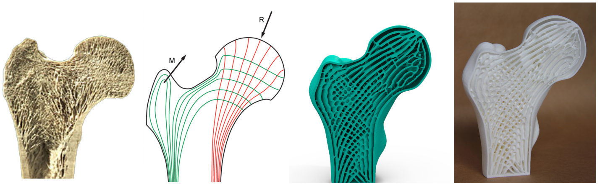
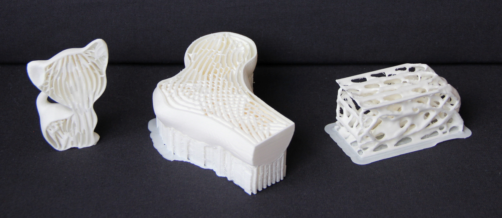

Infill Optimization for Additive Manufacturing -- Approaching Bone-like Porous Structures
IEEE Transactions on Visualization and Computer Graphics (TVCG), 2018
| Jun Wu | Niels Aage | Rüdiger Westermann | Ole Sigmund |
| now at TU Delft | DTU | TU Munich | DTU |

From left to right: Cross-section of a human femur showing cortical structures on the shell and trabecular structures in the interior. Illustration of principal stress directions under major mechanical loads. Cross-section of the optimized porous infill in a 3D bone model. The 3D printed bone model.
Abstract
Porous structures such as trabecular bone are widely seen in nature. These structures are lightweight and exhibit strong mechanical properties. In this paper, we present a method to generate bone-like porous structures as lightweight infill for additive manufacturing. Our method builds upon and extends voxel-wise topology optimization. In particular, for the purpose of generating sparse yet stable structures distributed in the interior of a given shape, we propose upper bounds on the localized material volume in the proximity of each voxel in the design domain. We then aggregate the local per-voxel constraints by their p-norm into an equivalent global constraint, in order to facilitate an efficient optimization process. Implemented on a high-resolution topology optimization framework, our results demonstrate mechanically optimized, detailed porous structures which mimic those found in nature. We further show variants of the optimized structures subject to different design specifications, and we analyze the optimality and robustness of the obtained structures.3D Prints
Gif Animation

Related Projects
Self-Supporting Rhombic Infill Structures for Additive Manufacturing
A System for High-Resolution Topology Optimization
Acknowledgements
The authors gratefully acknowledge the support from the H.C. Ørsted Postdoc Programme at the Technical University of Denmark, which has received funding from the People Programme (Marie Curie Actions) of the European Union's Seventh Framework Programme (FP7/2007-2013) under REA grant agreement no. 609405 (COFUNDPostdocDTU), and the support from the Villum foundation through the NextTop project.
Download
 |
Paper 7.7 MB |
 |
3D Model 58.1 MB |
|
Animation 6.7 MB |
 |
Code (Matlab) 7.2 KB |
Bibtex
@article{Wu2018TVCG,
author={Wu, Jun and Aage, Niels and Westermann, R\"udiger and Sigmund, Ole},
title={Infill Optimization for Additive Manufacturing -- Approaching Bone-like Porous Structures},
journal={IEEE Transactions on Visualization and Computer Graphics},
year={2018},
volume={24},
number={2},
pages={1127-1140},
doi={http://dx.doi.org/10.1109/TVCG.2017.2655523},
ISSN={1077-2626},
month={February},
}